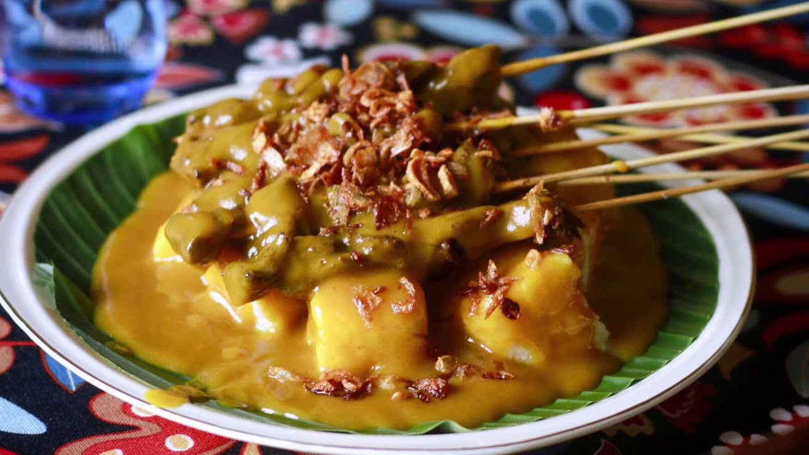

Sate Padang
Diposting pada 14.00 WIB, 09 Oktober 2023
Sate padang digemari masyarakat indonesia karena memiliki cita rasa gurih, pedas, dan penuh bumbu rempah yang membuatnya semakin istimewa. Tekstur kuah sate Padang yang khas juga menjadi pembeda dari jenis sate lainnya. Sate Padang bisa dibuat dari daging ayam, sapi, hingga jeroan.
Selengkapnya